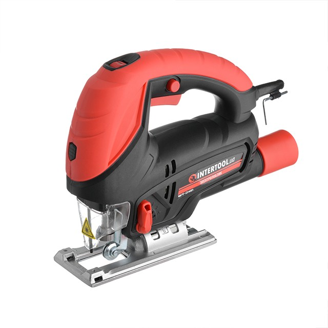
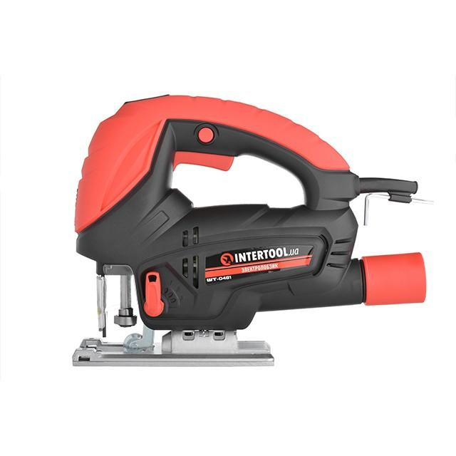

Характеристики
Производитель:
Intertool
Тип:
электролобзик
питание:
сеть
Мощность, Вт:
900
Число ходов на холостом ходу 1 / мин:
500-3000
Регулировка оборотов:
есть
Регулировка опорной пластины:
45 ° / 90 °
Маятниковый ход:
Нет данных
Число ступеней маятникового хода:
Нет данных
Глубина резания, мм
деревья:
80
стали:
8
дополнительно
Лазерный целеуказатель:
есть
Кейс в комплекте:
нету
Вес, кг:
2,6
еще:
Патрон бесключевой SDS, алюминиевая платформа